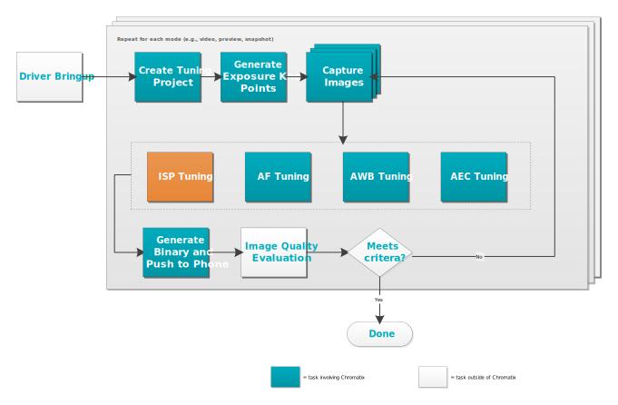
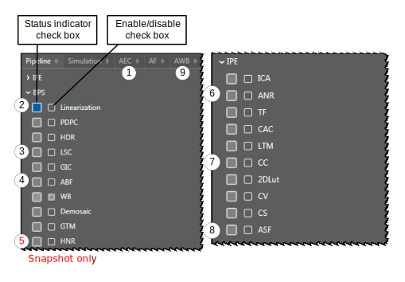

This section provides step-by-step procedures for tuning the ISP modules.

Note: Motion
compensated temporal filter (MCTF), multi-frame noise reduction (MFNR), and multi-frame
super resolution (MFSR) are not supported for Windows on Snapdragon (WoS).
For initial tuning, use the numbers in the pipeline figure below as a guide.
The numbers indicate the tasks required for manual initial tuning for the ISP 2xx and the
order in which the tasks must be performed. Refer to procedures named for each ISP module for
detailed instructions.
- Tune AEC trigger points for ISP modules
- Tune linearization
- Tune LSC
- Tune ABF
- Tune HNR (snapshot mode only)
- Tune ANR
- Tune Color Correction/Gamma
- Tune ASF
- Tune AWB reference points

The non-numbered modules are optional and can be tuned after initial tuning.
In the pipeline drawing, the tuning status of each module is indicated by the box on the left
(gray = untuned, or default values are used, blue = module has been modified).
Use the simulation feature at any time during the tuning process to evaluate
the progress of the tuning. After each tuning session, capture new test images with the tuned
device and objectively measure image quality.
Create a restore point
Use the Restore menu to create
global- and module-based restore points for a project. Restore points allow parameter
changes and settings to be restored to a previously saved point. Global-based restore points
cover the span of an entire project, whereas module-based restore points cover specific
modules selected at the time.
The
Restore Points menu docks beneath the pipeline
when Chromatix opens.
- To create a global restore point, click next to
Global.
- Type a name for the global restore point and click OK.
- To create a module restore point, in the pipeline, select the module for which the
restore point will be created.
- In the Restore Points menu, click next to the name of the selected
module.
- To load a restore point, click next to the preferred restore point.
- To delete a restore point, select Enable
Delete and click
next to the preferred restore point. To delete multiple restore points, select the
restore points to be deleted and press the delete key.
- To view all previously established restore points, click
Manage. Restore points can also be deleted via this menu.